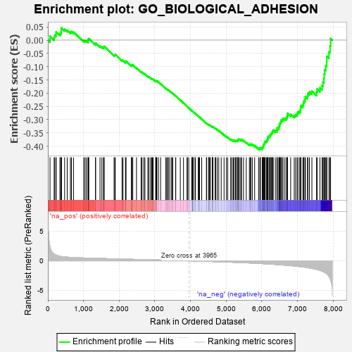
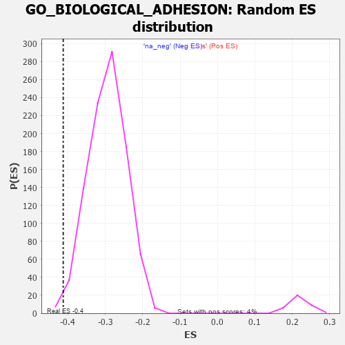

| | | Dataset | 7d |
| Phenotype | NoPhenotypeAvailable |
| Upregulated in class | na_neg |
| GeneSet | GO_BIOLOGICAL_ADHESION |
| Enrichment Score (ES) | -0.41260472 |
| Normalized Enrichment Score (NES) | -1.3983809 |
| Nominal p-value | 0.007261411 |
| FDR q-value | 0.3360215 |
| FWER p-Value | 1.0 |
Table: GSEA Results Summary

Fig 1: Enrichment plot: GO_BIOLOGICAL_ADHESION
Profile of the Running ES Score & Positions of GeneSet Members on the Rank Ordered List
| PROBE | GENE SYMBOL | GENE_TITLE | RANK IN GENE LIST | RANK METRIC SCORE | RUNNING ES | CORE ENRICHMENT | | 1 | RAC2 | | | 60 | 2.442 | 0.0146 | No |
| 2 | FOXF1 | | | 176 | 1.136 | 0.0102 | No |
| 3 | NCAM2 | | | 191 | 1.085 | 0.0183 | No |
| 4 | RHOH | | | 228 | 0.987 | 0.0226 | No |
| 5 | KIFC3 | | | 232 | 0.978 | 0.0312 | No |
| 6 | DLL1 | | | 337 | 0.760 | 0.0247 | No |
| 7 | RGMB | | | 368 | 0.732 | 0.0276 | No |
| 8 | NID2 | | | 373 | 0.721 | 0.0336 | No |
| 9 | RADIL | | | 374 | 0.720 | 0.0402 | No |
| 10 | SOX13 | | | 380 | 0.717 | 0.0461 | No |
| 11 | LRP1 | | | 470 | 0.648 | 0.0406 | No |
| 12 | SRF | | | 542 | 0.615 | 0.0370 | No |
| 13 | GLMN | | | 632 | 0.583 | 0.0309 | No |
| 14 | HES5 | | | 661 | 0.571 | 0.0325 | No |
| 15 | ID1 | | | 719 | 0.555 | 0.0303 | No |
| 16 | MEN1 | | | 1003 | 0.483 | -0.0018 | No |
| 17 | AKT1 | | | 1040 | 0.476 | -0.0021 | No |
| 18 | DGCR6 | | | 1078 | 0.467 | -0.0025 | No |
| 19 | SRC | | | 1128 | 0.459 | -0.0047 | No |
| 20 | FIBP | | | 1129 | 0.458 | -0.0005 | No |
| 21 | NCK2 | | | 1131 | 0.458 | 0.0036 | No |
| 22 | MTSS1 | | | 1149 | 0.454 | 0.0055 | No |
| 23 | NKAP | | | 1337 | 0.422 | -0.0147 | No |
| 24 | TBCD | | | 1338 | 0.422 | -0.0108 | No |
| 25 | LPP | | | 1462 | 0.397 | -0.0230 | No |
| 26 | INHBB | | | 1514 | 0.388 | -0.0261 | No |
| 27 | SOCS6 | | | 1560 | 0.381 | -0.0284 | No |
| 28 | CNTN4 | | | 1571 | 0.379 | -0.0262 | No |
| 29 | PTPRT | | | 1578 | 0.378 | -0.0235 | No |
| 30 | NFAT5 | | | 1856 | 0.326 | -0.0562 | No |
| 31 | NEO1 | | | 1879 | 0.323 | -0.0561 | No |
| 32 | PAK3 | | | 1889 | 0.322 | -0.0543 | No |
| 33 | LRRC7 | | | 2080 | 0.294 | -0.0761 | No |
| 34 | BMP7 | | | 2107 | 0.290 | -0.0768 | No |
| 35 | DDR1 | | | 2176 | 0.280 | -0.0830 | No |
| 36 | SYK | | | 2186 | 0.278 | -0.0816 | No |
| 37 | C1QBP | | | 2189 | 0.278 | -0.0793 | No |
| 38 | FAF1 | | | 2340 | 0.255 | -0.0963 | No |
| 39 | DOCK8 | | | 2341 | 0.254 | -0.0940 | No |
| 40 | BCAS3 | | | 2352 | 0.253 | -0.0930 | No |
| 41 | SYMPK | | | 2381 | 0.248 | -0.0943 | No |
| 42 | ZC3H8 | | | 2486 | 0.229 | -0.1056 | No |
| 43 | VAV3 | | | 2614 | 0.210 | -0.1200 | No |
| 44 | ATRN | | | 2640 | 0.207 | -0.1213 | No |
| 45 | DSCAM | | | 2689 | 0.200 | -0.1257 | No |
| 46 | HAS1 | | | 2722 | 0.195 | -0.1280 | No |
| 47 | FER | | | 2803 | 0.183 | -0.1367 | No |
| 48 | RIC8A | | | 2833 | 0.179 | -0.1388 | No |
| 49 | DAPK3 | | | 2880 | 0.169 | -0.1431 | No |
| 50 | AGGF1 | | | 2911 | 0.164 | -0.1455 | No |
| 51 | ACVR1 | | | 2932 | 0.161 | -0.1466 | No |
| 52 | RAB10 | | | 2952 | 0.157 | -0.1476 | No |
| 53 | WNT4 | | | 3023 | 0.146 | -0.1553 | No |
| 54 | TLN1 | | | 3030 | 0.145 | -0.1547 | No |
| 55 | LEF1 | | | 3037 | 0.144 | -0.1542 | No |
| 56 | MAEA | | | 3048 | 0.143 | -0.1542 | No |
| 57 | FEZ1 | | | 3055 | 0.142 | -0.1537 | No |
| 58 | RREB1 | | | 3099 | 0.137 | -0.1579 | No |
| 59 | GCNT2 | | | 3162 | 0.128 | -0.1648 | No |
| 60 | SMAD3 | | | 3303 | 0.105 | -0.1818 | No |
| 61 | CFDP1 | | | 3332 | 0.099 | -0.1845 | No |
| 62 | FMN1 | | | 3363 | 0.095 | -0.1875 | No |
| 63 | SMAD7 | | | 3369 | 0.093 | -0.1873 | No |
| 64 | TESK2 | | | 3401 | 0.089 | -0.1905 | No |
| 65 | PTPRK | | | 3454 | 0.084 | -0.1964 | No |
| 66 | CDK5 | | | 3480 | 0.080 | -0.1989 | No |
| 67 | FES | | | 3501 | 0.077 | -0.2008 | No |
| 68 | PARD3 | | | 3584 | 0.063 | -0.2107 | No |
| 69 | RSU1 | | | 3585 | 0.062 | -0.2102 | No |
| 70 | NF1 | | | 3713 | 0.040 | -0.2262 | No |
| 71 | VMP1 | | | 3803 | 0.027 | -0.2374 | No |
| 72 | JAG2 | | | 3903 | 0.010 | -0.2500 | No |
| 73 | FREM1 | | | 3912 | 0.008 | -0.2510 | No |
| 74 | GPC6 | | | 3950 | 0.002 | -0.2557 | No |
| 75 | TOR1A | | | 4030 | -0.013 | -0.2658 | No |
| 76 | ACTN1 | | | 4050 | -0.016 | -0.2681 | No |
| 77 | PKN2 | | | 4060 | -0.017 | -0.2691 | No |
| 78 | SFRP2 | | | 4065 | -0.018 | -0.2694 | No |
| 79 | ROBO2 | | | 4066 | -0.018 | -0.2693 | No |
| 80 | CSF1 | | | 4074 | -0.019 | -0.2700 | No |
| 81 | ABL1 | | | 4125 | -0.027 | -0.2762 | No |
| 82 | CRK | | | 4139 | -0.031 | -0.2776 | No |
| 83 | UNC5D | | | 4217 | -0.044 | -0.2871 | No |
| 84 | ARPC2 | | | 4232 | -0.047 | -0.2885 | No |
| 85 | ARL2 | | | 4254 | -0.050 | -0.2907 | No |
| 86 | BAG4 | | | 4314 | -0.061 | -0.2977 | No |
| 87 | LAMC1 | | | 4445 | -0.084 | -0.3137 | No |
| 88 | FRMD5 | | | 4455 | -0.085 | -0.3141 | No |
| 89 | ILK | | | 4510 | -0.096 | -0.3202 | No |
| 90 | ICAM5 | | | 4511 | -0.096 | -0.3193 | No |
| 91 | NPTN | | | 4519 | -0.098 | -0.3193 | No |
| 92 | RIN2 | | | 4535 | -0.101 | -0.3203 | No |
| 93 | APC | | | 4558 | -0.107 | -0.3221 | No |
| 94 | ADTRP | | | 4612 | -0.120 | -0.3279 | No |
| 95 | GATA3 | | | 4614 | -0.120 | -0.3269 | No |
| 96 | DLG5 | | | 4619 | -0.121 | -0.3263 | No |
| 97 | SDK1 | | | 4627 | -0.124 | -0.3261 | No |
| 98 | PTK7 | | | 4687 | -0.136 | -0.3324 | No |
| 99 | ARF6 | | | 4704 | -0.140 | -0.3332 | No |
| 100 | FBLN1 | | | 4748 | -0.149 | -0.3374 | No |
| 101 | CD151 | | | 4791 | -0.156 | -0.3414 | No |
| 102 | DLG1 | | | 4860 | -0.169 | -0.3486 | No |
| 103 | FZD4 | | | 4940 | -0.186 | -0.3570 | No |
| 104 | KLF4 | | | 5005 | -0.198 | -0.3635 | No |
| 105 | PDPK1 | | | 5043 | -0.207 | -0.3663 | No |
| 106 | STK10 | | | 5130 | -0.233 | -0.3753 | No |
| 107 | FLCN | | | 5140 | -0.235 | -0.3743 | No |
| 108 | PARVA | | | 5187 | -0.245 | -0.3780 | No |
| 109 | ATM | | | 5210 | -0.249 | -0.3785 | No |
| 110 | GPR4 | | | 5219 | -0.250 | -0.3773 | No |
| 111 | PTEN | | | 5262 | -0.261 | -0.3803 | No |
| 112 | EPHA4 | | | 5273 | -0.265 | -0.3792 | No |
| 113 | FAT1 | | | 5281 | -0.267 | -0.3776 | No |
| 114 | CD9 | | | 5319 | -0.277 | -0.3799 | No |
| 115 | MPDZ | | | 5325 | -0.279 | -0.3780 | No |
| 116 | NPY2R | | | 5331 | -0.281 | -0.3760 | No |
| 117 | ELMO2 | | | 5341 | -0.283 | -0.3746 | No |
| 118 | EPHA1 | | | 5349 | -0.285 | -0.3729 | No |
| 119 | DLG4 | | | 5388 | -0.293 | -0.3751 | No |
| 120 | MDGA1 | | | 5424 | -0.301 | -0.3769 | No |
| 121 | GCNT1 | | | 5426 | -0.301 | -0.3743 | No |
| 122 | ACTN3 | | | 5486 | -0.315 | -0.3790 | No |
| 123 | FOLR2 | | | 5563 | -0.336 | -0.3857 | No |
| 124 | WNK1 | | | 5650 | -0.362 | -0.3935 | No |
| 125 | CD63 | | | 5680 | -0.370 | -0.3938 | No |
| 126 | LRRC4 | | | 5692 | -0.371 | -0.3919 | No |
| 127 | LRFN4 | | | 5733 | -0.387 | -0.3935 | No |
| 128 | ADA | | | 5798 | -0.405 | -0.3980 | No |
| 129 | DOCK1 | | | 5908 | -0.438 | -0.4080 | No |
| 130 | LDB1 | | | 5944 | -0.451 | -0.4084 | Yes |
| 131 | ACTN2 | | | 5960 | -0.458 | -0.4062 | Yes |
| 132 | XBP1 | | | 6011 | -0.475 | -0.4083 | Yes |
| 133 | PRKX | | | 6016 | -0.477 | -0.4044 | Yes |
| 134 | RAC1 | | | 6036 | -0.484 | -0.4024 | Yes |
| 135 | VAMP3 | | | 6043 | -0.487 | -0.3988 | Yes |
| 136 | ADD2 | | | 6046 | -0.487 | -0.3946 | Yes |
| 137 | JAG1 | | | 6060 | -0.494 | -0.3917 | Yes |
| 138 | CALR | | | 6077 | -0.499 | -0.3893 | Yes |
| 139 | FBN1 | | | 6080 | -0.499 | -0.3850 | Yes |
| 140 | FLOT2 | | | 6092 | -0.504 | -0.3818 | Yes |
| 141 | DLG2 | | | 6126 | -0.513 | -0.3813 | Yes |
| 142 | STK4 | | | 6145 | -0.518 | -0.3789 | Yes |
| 143 | ROCK1 | | | 6152 | -0.520 | -0.3749 | Yes |
| 144 | PARVB | | | 6168 | -0.528 | -0.3720 | Yes |
| 145 | GRID2 | | | 6170 | -0.528 | -0.3674 | Yes |
| 146 | RAG1 | | | 6176 | -0.530 | -0.3631 | Yes |
| 147 | VIT | | | 6215 | -0.541 | -0.3631 | Yes |
| 148 | TPM1 | | | 6226 | -0.545 | -0.3594 | Yes |
| 149 | CDC42 | | | 6236 | -0.548 | -0.3556 | Yes |
| 150 | AP3D1 | | | 6261 | -0.558 | -0.3535 | Yes |
| 151 | FLOT1 | | | 6276 | -0.564 | -0.3502 | Yes |
| 152 | TLN2 | | | 6297 | -0.574 | -0.3475 | Yes |
| 153 | LMO7 | | | 6303 | -0.578 | -0.3429 | Yes |
| 154 | NCAM1 | | | 6318 | -0.582 | -0.3394 | Yes |
| 155 | CDON | | | 6378 | -0.607 | -0.3414 | Yes |
| 156 | PTPRD | | | 6423 | -0.629 | -0.3414 | Yes |
| 157 | CSK | | | 6428 | -0.630 | -0.3361 | Yes |
| 158 | MALT1 | | | 6432 | -0.634 | -0.3307 | Yes |
| 159 | SOX2 | | | 6477 | -0.652 | -0.3304 | Yes |
| 160 | DYSF | | | 6481 | -0.654 | -0.3248 | Yes |
| 161 | LAMA1 | | | 6496 | -0.659 | -0.3206 | Yes |
| 162 | DPP4 | | | 6501 | -0.663 | -0.3151 | Yes |
| 163 | TRPV4 | | | 6515 | -0.668 | -0.3107 | Yes |
| 164 | KANK1 | | | 6536 | -0.678 | -0.3070 | Yes |
| 165 | DDR2 | | | 6542 | -0.681 | -0.3015 | Yes |
| 166 | ROBO1 | | | 6577 | -0.699 | -0.2995 | Yes |
| 167 | VWF | | | 6593 | -0.706 | -0.2949 | Yes |
| 168 | PTPRS | | | 6646 | -0.738 | -0.2949 | Yes |
| 169 | PAK1 | | | 6691 | -0.757 | -0.2936 | Yes |
| 170 | EGFR | | | 6708 | -0.765 | -0.2887 | Yes |
| 171 | GSK3B | | | 6719 | -0.768 | -0.2830 | Yes |
| 172 | PCDH9 | | | 6721 | -0.769 | -0.2761 | Yes |
| 173 | ADAM9 | | | 6808 | -0.819 | -0.2797 | Yes |
| 174 | PTPRF | | | 6908 | -0.872 | -0.2845 | Yes |
| 175 | FAT4 | | | 6948 | -0.901 | -0.2813 | Yes |
| 176 | NPHP4 | | | 6991 | -0.931 | -0.2782 | Yes |
| 177 | CCR2 | | | 7003 | -0.939 | -0.2710 | Yes |
| 178 | MYH10 | | | 7048 | -0.966 | -0.2678 | Yes |
| 179 | FAT2 | | | 7084 | -0.983 | -0.2634 | Yes |
| 180 | NID1 | | | 7088 | -0.987 | -0.2547 | Yes |
| 181 | RAB1A | | | 7096 | -0.993 | -0.2466 | Yes |
| 182 | SPON1 | | | 7151 | -1.035 | -0.2441 | Yes |
| 183 | PCDH1 | | | 7165 | -1.046 | -0.2362 | Yes |
| 184 | PTPRJ | | | 7180 | -1.054 | -0.2284 | Yes |
| 185 | IFT74 | | | 7211 | -1.085 | -0.2223 | Yes |
| 186 | LAMB1 | | | 7220 | -1.094 | -0.2134 | Yes |
| 187 | CIB1 | | | 7280 | -1.152 | -0.2104 | Yes |
| 188 | ASTL | | | 7290 | -1.159 | -0.2010 | Yes |
| 189 | CYLD | | | 7333 | -1.206 | -0.1954 | Yes |
| 190 | LOXL2 | | | 7403 | -1.269 | -0.1927 | Yes |
| 191 | CD22 | | | 7534 | -1.449 | -0.1962 | Yes |
| 192 | LAMA2 | | | 7549 | -1.468 | -0.1846 | Yes |
| 193 | PKD1 | | | 7628 | -1.611 | -0.1799 | Yes |
| 194 | ANK3 | | | 7690 | -1.740 | -0.1719 | Yes |
| 195 | HMCN1 | | | 7713 | -1.801 | -0.1583 | Yes |
| 196 | PLPP3 | | | 7740 | -1.876 | -0.1445 | Yes |
| 197 | CASP3 | | | 7747 | -1.902 | -0.1279 | Yes |
| 198 | TRPM7 | | | 7761 | -1.936 | -0.1119 | Yes |
| 199 | NPHP1 | | | 7791 | -2.041 | -0.0969 | Yes |
| 200 | TRAF6 | | | 7818 | -2.157 | -0.0806 | Yes |
| 201 | LMLN | | | 7821 | -2.165 | -0.0611 | Yes |
| 202 | FYN | | | 7881 | -2.622 | -0.0447 | Yes |
| 203 | ZAN | | | 7912 | -2.932 | -0.0218 | Yes |
| 204 | VWA2 | | | 7927 | -3.205 | 0.0057 | Yes |
Table: GSEA details [plain text format]

Fig 2: GO_BIOLOGICAL_ADHESION: Random ES distribution
Gene set null distribution of ES for GO_BIOLOGICAL_ADHESION